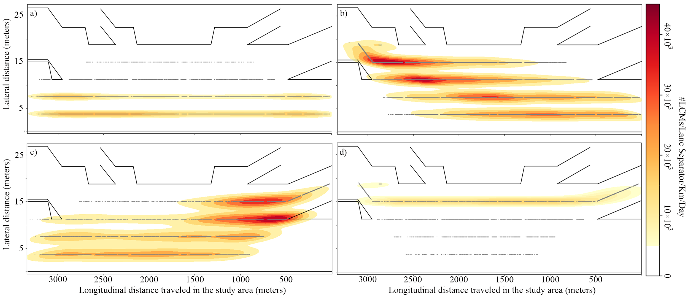
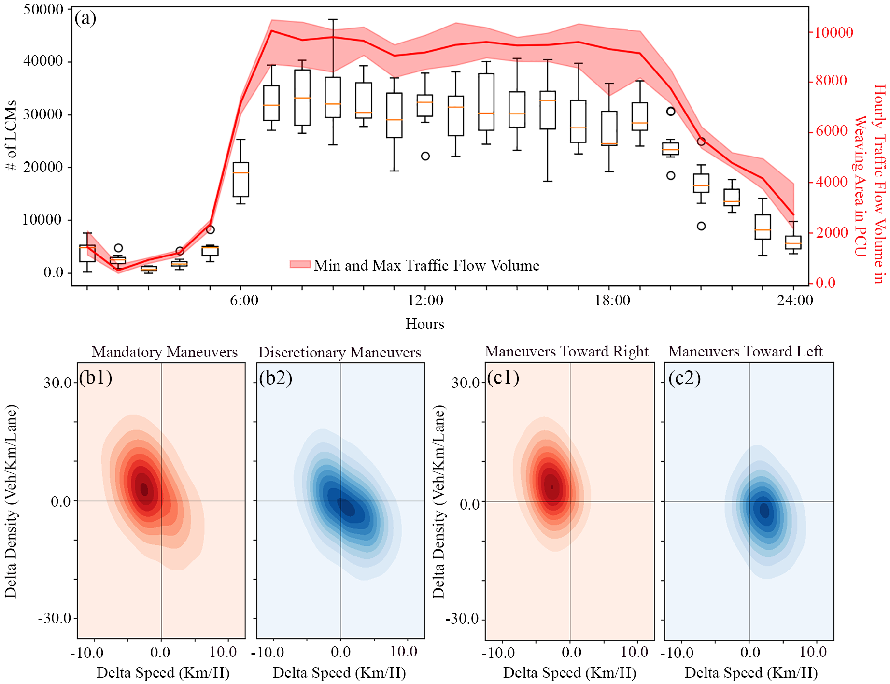

Empirical Analysis of Lane-Changing Behavior
in Weaving Areas
This project focuses on empirically uncovering how lane-changing maneuvers unfold in motorway weaving areas, where traffic flow is shaped by dense interactions, competing route choices, and spatial constraints. Weaving sections are among the most operationally critical parts of the network, as frequent lane changes amplify turbulence, reduce capacity, and increase safety risk. Rather than relying on idealized assumptions or simulation-only representations, this study is grounded in observed behavior, aiming to reveal how real drivers execute lane changes under different traffic conditions. The core motivation is to provide a data-driven understanding of lane-changing dynamics that can support more realistic modeling, calibration, and operational assessment of traffic flow in complex motorway environments.

Methodologically, the project is built on the reconstruction of high-resolution vehicle trajectories from floating car data (FCD), enabling detailed empirical analysis at the maneuver level. By inferring continuous vehicle trajectories from sparse and imperfect observations, the study recovers the timing, location, duration, and surrounding traffic context of lane-changing maneuvers across weaving segments. This reconstruction allows lane changes to be analyzed not as isolated events, but as embedded processes influenced by local density, speed differentials, and lane-specific conditions. The analysis systematically characterizes how lane-changing behavior varies across traffic regimes and spatial zones within the weaving area, demonstrating a rigorous approach to extracting behavioral insight from noisy, large-scale observational data (10th Symposium of the European Association for Research in Transportation hEART - 2022, Transportation Research Board 102nd Annual Meeting -2023, Transportation Research Record - 2023).

Beyond its immediate traffic-engineering relevance, this project illustrates how complex interaction behaviors can be empirically inferred from incomplete and indirect data sources. From a broader data-science perspective, the work exemplifies state reconstruction, event detection, and context-aware behavioral analysis in systems where direct measurement is unavailable or impractical. The methodology, combining trajectory reconstruction, statistical characterization, and regime-dependent analysis, is directly transferable to domains such as human–machine interaction, and operational monitoring of large-scale systems. By grounding behavioral modeling in reconstructed reality rather than assumptions, the project strengthens the link between empirical evidence, model development, and decision support.

Uniqueness
- High-resolution empirical analysis of lane-changing maneuvers using reconstructed floating car trajectories.
- Detailed characterization of lane-change timing, location, and context in motorway weaving areas.
- Behavioral insights derived from sparse, noisy observational data without relying on simulation assumptions.
- Direct relevance for model calibration, traffic operations analysis, and safety assessment.